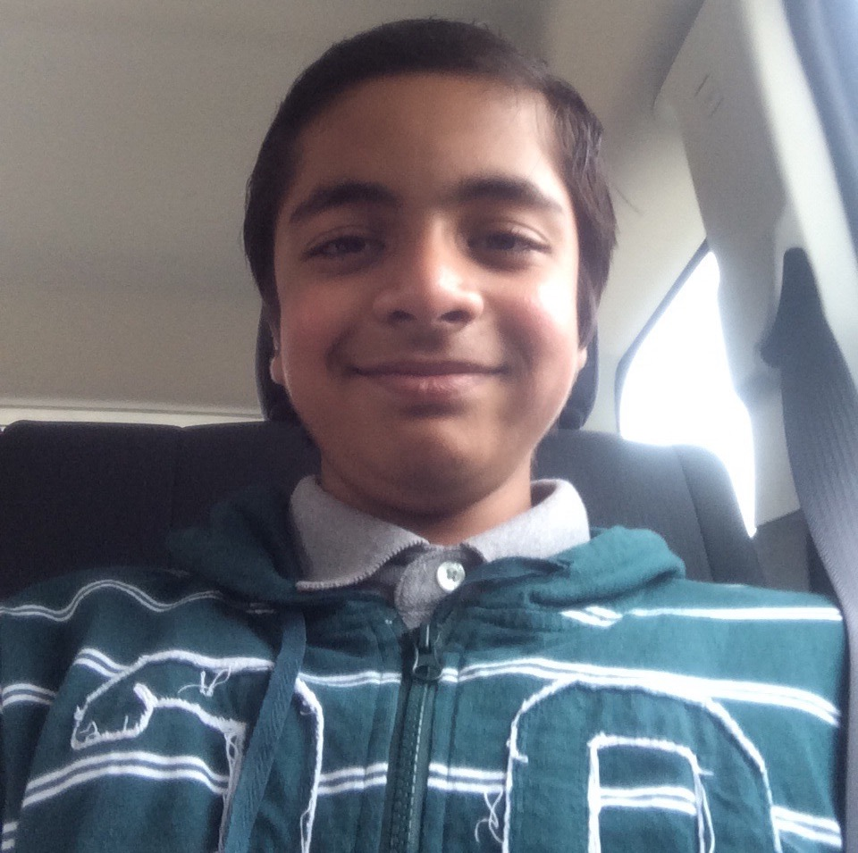

Life in India
Time period of living: 2000-2013.
Schools studied at:
- National Public School (Bangalore)
- Arya Vidya Mandir (Mumbai)
- Delhi Public School (Navi Mumbai)
Grades studied:- Lower Kindergarten-Upper Kindergarten (Bangalore)
- 1st-2nd grade (Mumbai)
- 3rd-6th grade (Bangalore)
- 7th-8th Grade [half!] (Navi Mumbai)
Sports played:- Tennis
- Cricket
- Table Tennis
- Swimming
- Soccer
- Basketball
- Volleyball
- Hockey
Major Hobbies fulfilled:- Computer Programming
- Origami
- Reading
- Fixing almost anything at my house (and for my friends!)
A Picture of Me about 4 years back.
Yup! So innocent and chill, right?

Me
Pictured in a bedroom in my family's last rented house in Navi Mumbai, Maharashtra, India. This also happened to my first and only Facebook profile picture.
Full Size
Life in the U.S.A.
Time period of living: 2013-Current.
Schools studied at:
- Portage West Middle School (Portage)
- Portage Northern High School (Portage)
- Academically Talented Youth Program [ATYP] (Kalamazoo)
- Kalamazoo Area Mathematics and Science Center [KAMSC] (Kalamazoo)
Grades studied:- 8th Grade [three quarters!] (Portage West)
- 9th Grade - Current [11th Grade in progress] (Portage Northern, KAMSC, and ATYP)
Sports played:- Tennis
- Cricket
- Table Tennis
- Swimming
Major Hobbies fulfilled:- Computer Programming
- Helping out/Volunteering at numerous places around the county
- Fixing almost anything at my house (and for my friends!)
A Picture of Me about 2 years back.
A bit more decent, eh?

Me
Pictured in a car on the way back to my new home in Kalamazoo, Michigan, United States of America. This is most often a profile picture for most of my other accounts online.
Full Size
{kind=link}